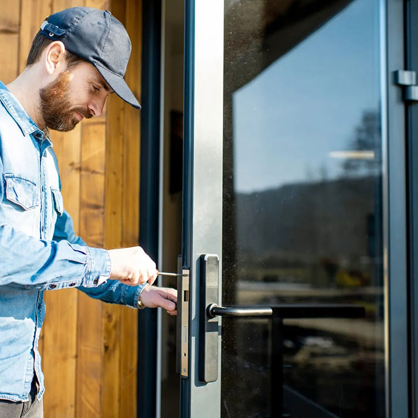
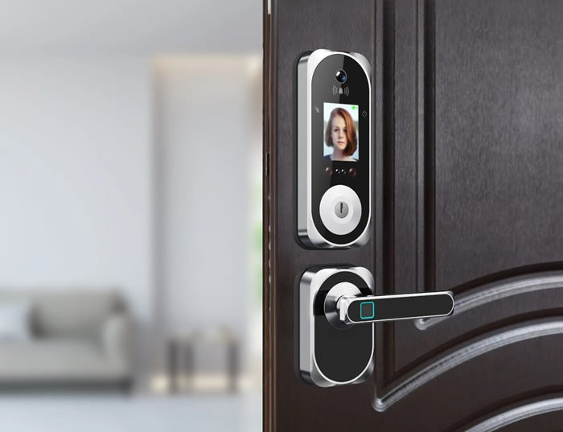

Security is extremely important for all businesses, regardless of the industry. Whether you own a small brick and mortar retail store or manage a large office building, it is important that your locks and access control systems perform their essential roles. At Fast Austin Locksmith, we offer premium automotive, residential and commercial locksmith services for local clients including high security lock upgrades, master key system creation, door closer installation, safe lock repair, panic bar replacement and 24 hour lockout assistance in Austin, Texas and surrounding communities.
We Provide a Variety of Quality Commercial Locksmith Services
Our commercial locksmiths offer a wide variety of popularly requested services including key duplications, safe lock repairs, emergency exit maintenance, entry door lock installation, high security lock upgrades, lockout assistance, rekeying and so much more. Discuss your needs one on one with our knowledgeable staff and we will create a customized solution that is sure to fit your needs and budget.
512-969-6225

Did someone try to break into your retail store or restaurant in the middle of the night? Is your property at risk over the weekend due to a damaged or dysfunctional deadbolt? You shouldn’t have to wait until Monday morning to get the professional care you need. Unfortunately, it can be difficult to find a local locksmith who will answer their phone outside of normal business hours. If you need commercial locksmith services, then call our team anytime, day or night. We will always strive to make your safety our top priority. That is why we offer 24 hour emergency locksmith services for Austin area businesses. Contact our specialists 24 hours a day, 7 days a week, and we will send someone to the rescue right away.

Fast Austin Locksmith Has Years of Experience Providing Dependable Commercial Locksmith.

We are a Locally Owned & Operated Locksmith Offering Emergency Commercial Locksmith Services.

Nemo enim ipsam voluptatem quia voluptas sit aspernatur aut odit aut fugit